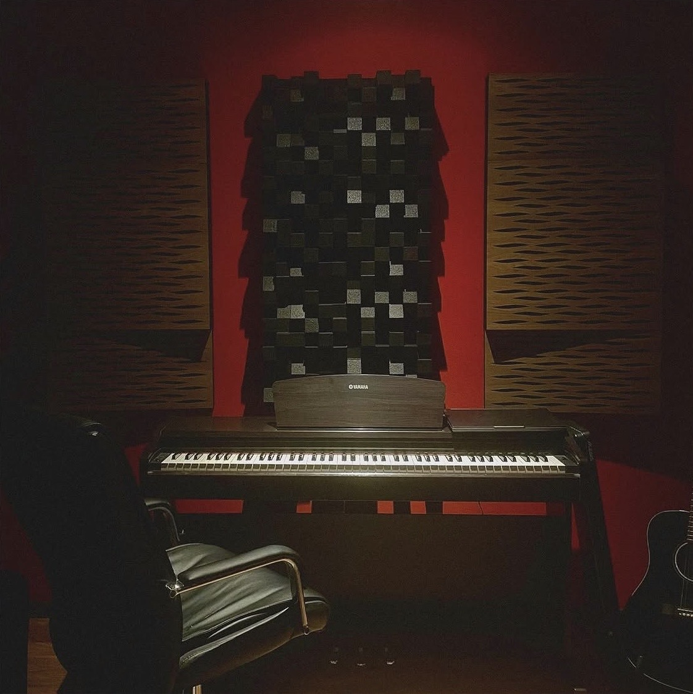

Trust Music™
It's not a label. It's a movement!
Welcome to Trust Music™ — founded by Krenar Batusha and And Sylejmani, with Marc Hill (Producer & DJ) leading the production.
A studio for songs — a creative space where every track is born.
Collaborations with: lluni, Buta, Ago, ILO, JOLLE, Nino, Londrimi, ERVIS, XENT and many more.
